Chapter 11 Straight Line Models and Correlation
11.1 Assessing A Scatterplot
Let’s consider the relationship of bmi and waist.circ in the nyfs1 data. We’ll begin our investigation, as we always should, by drawing a relevant picture. For the association of two quantitative variables, a scatterplot is usually the right start. Each subject in the nyfs1 data is represented by one of the points below.
ggplot(data = nyfs1, aes(x = waist.circ, y = bmi)) +
geom_point() +
labs(title = "BMI vs. Waist Circumference in the nyfs1 data")
Here, I’ve arbitrarily decided to place bmi on the vertical axis, and waist.circ on the horizontal. Fitting a prediction model to this scatterplot will then require that we predict bmi on the basis of waist.circ.
In this case, the pattern appears to be:
- direct, or positive, in that the values of the \(x\) variable (
waist.circ) increase, so do the values of the \(y\) variable (bmi). Essentially, it appears that subjects with larger waist circumferences also have larger BMIs, but we don’t know cause and effect here. - fairly linear in that most of the points cluster around what appears to be a pattern which is well-fitted by a straight line.
- strong in that the range of values for
bmiassociated with any particular value ofwaist.circis fairly tight. If we know someone’s waist circumference, we can pretty accurately predict their BMI, among the subjects in these data. - that we see at least one fairly substantial outlier value at the upper left of the plot, which I’ll identify in the plot below with a red dot.
11.1.1 Highlighting an unusual point
To highlight the outlier, I’ll note that it’s the only point with BMI > 35 and waist.circ < 70. So I’ll create a subset of the nyfs1 data containing the point that meets that standard, and then add a red point and a label to the plot.
# identify outlier and place it in data frame s1
s1 <- filter(nyfs1, bmi>35 & waist.circ < 70)
ggplot(data = nyfs1, aes(x = waist.circ, y = bmi)) +
geom_point() +
# next two lines add outlier color, and then a label
geom_point(data = s1, col = "red") +
geom_text(data = s1, label = s1$subject.id, vjust = -1, col = "red") +
labs(title = "BMI vs. Waist Circumference in the nyfs1 data",
subtitle = "with outlier labeled by subject ID")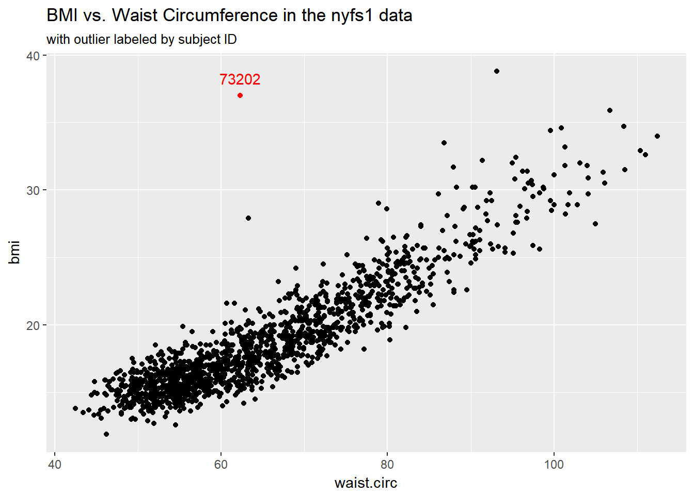
s1# A tibble: 1 x 7
subject.id sex age.exam bmi bmi.cat waist.circ triceps.skinfold
<int> <fctr> <int> <dbl> <fctr> <dbl> <dbl>
1 73202 Male 13 37 4 Obese 62.3 7.2Does it seem to you like a straight line model will describe this relationship well?
11.1.2 Adding a Scatterplot Smooth using loess
We’ll use the loess procedure to fit a smooth curve to the data, which attempts to capture the general pattern.
ggplot(data = nyfs1, aes(x = waist.circ, y = bmi)) +
geom_point() +
geom_smooth(method = "loess", se = FALSE) +
labs(title = "BMI vs. Waist Circumference in the nyfs1 data",
caption = "with fitted loess smooth")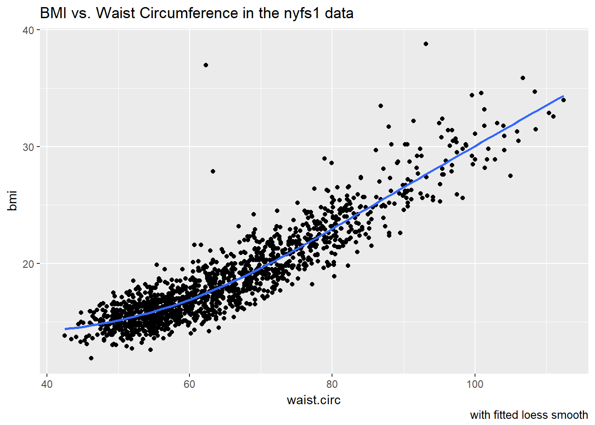
The smooth curve backs up our earlier thought that a straight line might fit the data well. More on the loess smooth in Section @ref(loess_smooth)
11.1.3 Adding a Straight Line to the Scatterplot
Let’s go ahead and add a straight line to the plot, and we’ll change the shape of the points to emphasize the fitted line a bit more.
ggplot(data = nyfs1, aes(x = waist.circ, y = bmi)) +
geom_point(shape = "o") +
geom_smooth(method = "lm", se = FALSE, col = "deeppink") +
labs(title = "BMI vs. Waist Circumference in the nyfs1 data",
caption = "with fitted straight line model") +
theme_bw()
How can we, mathematically, characterize that line? As with any straight line, our model equation requires us to specify two parameters: a slope and an intercept (sometimes called the y-intercept.)
11.1.4 What Line Does R Fit?
To identify the equation R used to fit this line (using the method of least squares), we use the lm command
lm(bmi ~ waist.circ, data = nyfs1)
Call:
lm(formula = bmi ~ waist.circ, data = nyfs1)
Coefficients:
(Intercept) waist.circ
-0.0665 0.2889 So the fitted line is specified as
\[ \mbox{BMI} = -0.066 + 0.289 \mbox{ Waist Circumference} \]
A detailed summary of the fitted linear regression model is also available.
summary(lm(bmi ~ waist.circ, data = nyfs1))
Call:
lm(formula = bmi ~ waist.circ, data = nyfs1)
Residuals:
Min 1Q Median 3Q Max
-4.234 -1.094 -0.074 0.925 19.066
Coefficients:
Estimate Std. Error t value Pr(>|t|)
(Intercept) -0.0665 0.2329 -0.29 0.78
waist.circ 0.2889 0.0035 82.55 <2e-16 ***
---
Signif. codes: 0 '***' 0.001 '**' 0.01 '*' 0.05 '.' 0.1 ' ' 1
Residual standard error: 1.69 on 1414 degrees of freedom
Multiple R-squared: 0.828, Adjusted R-squared: 0.828
F-statistic: 6.81e+03 on 1 and 1414 DF, p-value: <2e-16We’ll spend a lot of time working with these regression summaries, especially in Part C of the course.
For now, it will suffice to understand the following:
- The outcome variable in this model is bmi, and the predictor variable is waist.circ.
- The straight line model for these data fitted by least squares is
bmi= -0.066 + 0.289waist.circ - The slope of
waist.circis positive, which indicates that aswaist.circincreases, we expect thatbmiwill also increase. Specifically, we expect that for every additional cm of waist circumference, the BMI will be 0.289 kg/m2 larger. - The multiple R-squared (squared correlation coefficient) is 0.828, which implies that 82.8% of the variation in
bmiis explained using this linear model withwaist.circIt also implies that the Pearson correlation between force and height is the square root of 0.828, or 0.91. More on the Pearson correlation soon.
So, if we plan to use a simple (least squares) linear regression model to describe BMI as a function of waist circumference, does it look like a least squares model is likely to be an effective choice here?
11.2 Correlation Coefficients
We have several types of correlation coefficient to help describe this association.
- The one most often used is called the Pearson correlation coefficient, and is symbolized with the letter r or sometimes the Greek letter rho (\(\rho\)).
- Another tool for us is the Spearman rank correlation coefficient, also occasionally symbolized by \(\rho\)).
For the nyfs1 data, the Pearson correlation of bmi and waist.circ can be found using the cor() function.
cor(nyfs1$bmi, nyfs1$waist.circ)[1] 0.91nyfs1 %>%
select(bmi, waist.circ) %>%
cor() bmi waist.circ
bmi 1.00 0.91
waist.circ 0.91 1.00Note that the correlation of any variable with itself is 1, and that the correlation of bmi with waist.circ is the same regardless of whether you enter bmi first or waist.circ first.
11.3 The Pearson Correlation Coefficient
Suppose we have \(n\) observations on two variables, called X and Y. The Pearson correlation coefficient assesses how well the relationship between X and Y can be described using a linear function.
- The Pearson correlation is dimension-free.
- It falls between -1 and +1, with the extremes corresponding to situations where all the points in a scatterplot fall exactly on a straight line with negative and positive slopes, respectively.
- A Pearson correlation of zero corresponds to the situation where there is no linear association.
- Unlike the estimated slope in a regression line, the sample correlation coefficient is symmetric in X and Y, so it does not depend on labeling one of them (Y) the response variable, and one of them (X) the predictor.
Suppose we have \(n\) observations on two variables, called \(X\) and \(Y\), where \(\bar{X}\) is the sample mean of \(X\) and \(s_x\) is the standard deviation of \(X\). The Pearson correlation coefficient \(r_{XY}\) is:
\[ r_{XY} = \frac{1}{n-1} \sum\limits_{i=1}^n (\frac{x_i - \bar{x}}{s_x}) (\frac{y_i - \bar{y}}{s_y}) \]
11.4 A simulated example
The correx1 data file contains six different sets of (x,y) points, identified by the set variable.
correx1 <- read.csv("data/correx1.csv") %>% tbl_df
summary(correx1) set x y
Alex :62 Min. : 5.9 Min. : 7.3
Bonnie :37 1st Qu.:29.5 1st Qu.:30.4
Colin :36 Median :46.2 Median :46.9
Danielle:70 Mean :46.5 Mean :49.1
Earl :15 3rd Qu.:63.3 3rd Qu.:68.1
Fiona :57 Max. :98.2 Max. :95.4 11.4.1 Data Set Alex
Let’s start by working with the Alex data set.
ggplot(filter(correx1, set == "Alex"), aes(x = x, y = y)) +
geom_point() +
labs(title = "correx1: Data Set Alex")
ggplot(filter(correx1, set == "Alex"), aes(x = x, y = y)) +
geom_point() +
geom_smooth(col = "blue") +
labs(title = "correx1: Alex, with loess smooth")`geom_smooth()` using method = 'loess'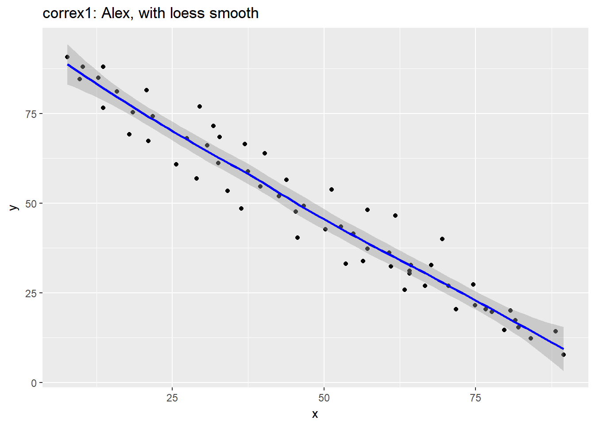
setA <- filter(correx1, set == "Alex")
ggplot(setA, aes(x = x, y = y)) +
geom_point() +
geom_smooth(method = "lm", col = "red") +
labs(title = "correx1: Alex, with Fitted Linear Model") +
annotate("text", x = 75, y = 75, col = "purple", size = 6,
label = paste("Pearson r = ", signif(cor(setA$x, setA$y),3))) +
annotate("text", x = 50, y = 15, col = "red", size = 5,
label = paste("y = ", signif(coef(lm(setA$y ~ setA$x))[1],3),
signif(coef(lm(setA$y ~ setA$x))[2],2), "x"))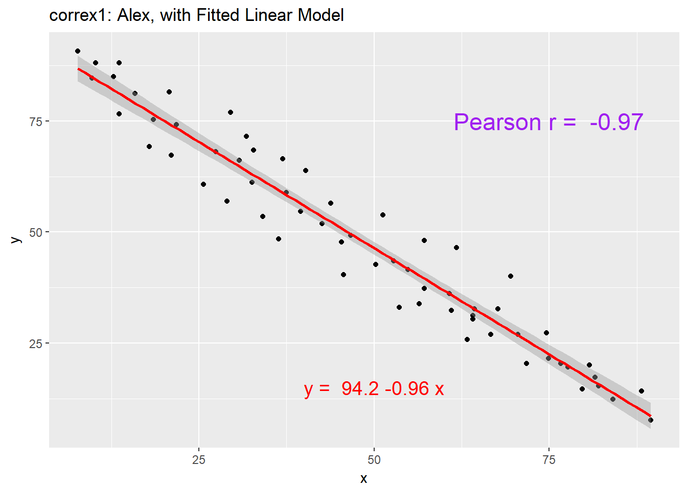
11.4.2 Data Set Bonnie
setB <- dplyr::filter(correx1, set == "Bonnie")
ggplot(setB, aes(x = x, y = y)) +
geom_point() +
labs(title = "correx1: Data Set Bonnie")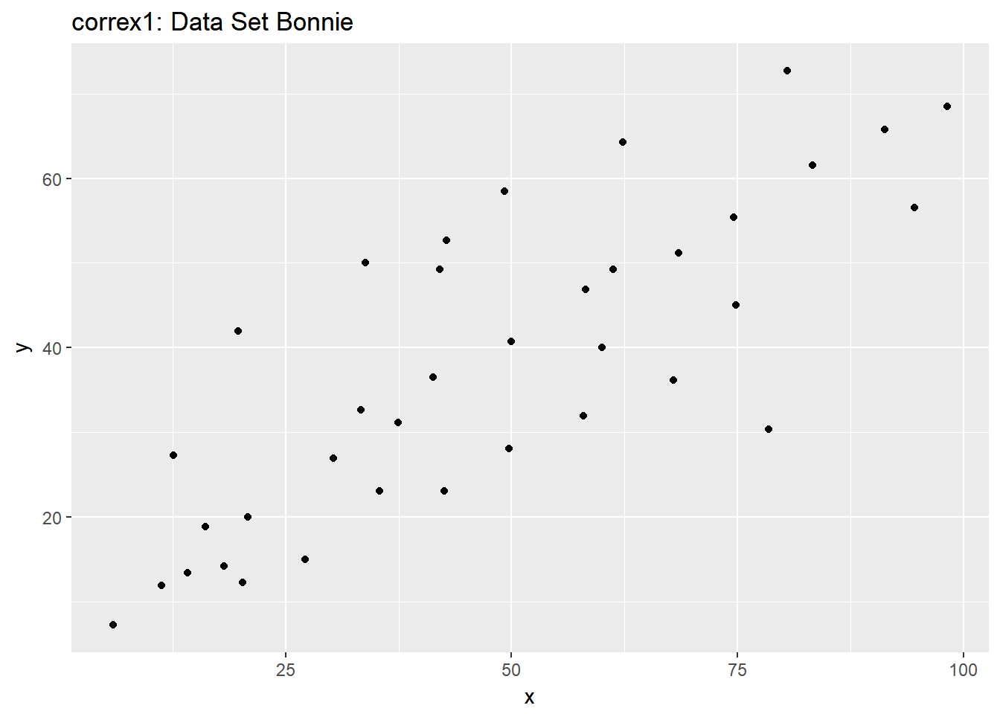
ggplot(setB, aes(x = x, y = y)) +
geom_point() +
geom_smooth(method = "lm", col = "red") +
labs(title = "correx1: Bonnie, with Fitted Linear Model") +
annotate("text", x = 25, y = 65, col = "purple", size = 6,
label = paste("Pearson r = ", signif(cor(setB$x, setB$y),2))) +
annotate("text", x = 50, y = 15, col = "red", size = 5,
label = paste("y = ", signif(coef(lm(setB$y ~ setB$x))[1],3),
" + ",
signif(coef(lm(setB$y ~ setB$x))[2],2), "x"))
11.4.3 Correlations for All Six Data Sets in the Correx1 Example
Let’s look at the Pearson correlations associated with each of the six data sets contained in the correx1 example.
tab1 <- correx1 %>%
group_by(set) %>%
dplyr::summarize("Pearson r" = round(cor(x, y, use="complete"),2))
knitr::kable(tab1)| set | Pearson r |
|---|---|
| Alex | -0.97 |
| Bonnie | 0.80 |
| Colin | -0.80 |
| Danielle | 0.00 |
| Earl | -0.01 |
| Fiona | 0.00 |
11.4.4 Data Set Colin
It looks like the picture for Colin should be very similar (in terms of scatter) to the picture for Bonnie, except that Colin will have a negative slope, rather than the positive one Bonnie has. Is that how this plays out?
setBC <- filter(correx1, set == "Bonnie" | set == "Colin")
ggplot(setBC, aes(x = x, y = y)) +
geom_point() +
geom_smooth(method = "lm", col = "red") +
facet_wrap(~ set)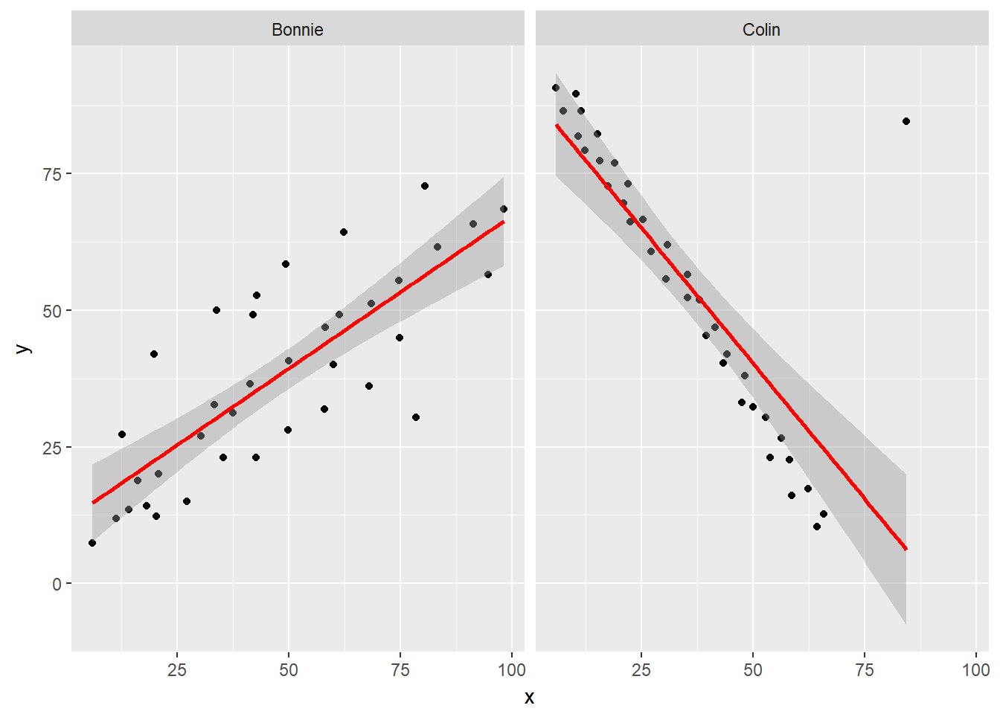
Uh, oh. It looks like the point in Colin at the top right is twisting what would otherwise be a very straight regression model with an extremely strong negative correlation. There’s no better way to look for outliers than to examine the scatterplot.
11.4.5 Draw the Picture!
We’ve seen that Danielle, Earl and Fiona all show Pearson correlations of essentially zero. However, the three data sets look very different in a scatterplot.
ggplot(correx1, aes(x = x, y = y)) +
geom_point() +
geom_smooth(method = "loess") +
facet_wrap(~ set)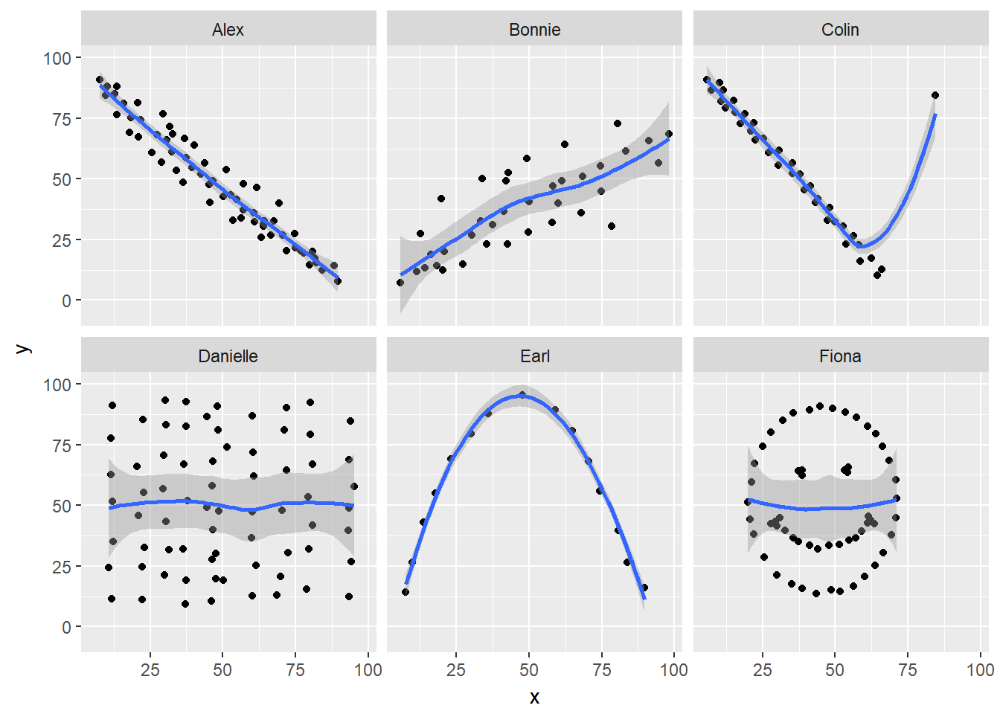
When we learn that the correlation is zero, we tend to assume we have a picture like the Danielle data set. If Danielle were our real data, we might well think that x would be of little use in predicting y.
- But what if our data looked like Earl? In the Earl data set, x is incredibly helpful in predicting y, but we can’t use a straight line model - instead, we need a non-linear modeling approach.
- You’ll recall that the Fiona data set also had a Pearson correlation of zero. But here, the picture is rather more interesting.
So, remember, draw the d%$# picture whenever you make use of a summary statistic, like a correlation coefficient, or linear model.
rm(setA, setB, setBC, tab1)11.5 Estimating Correlation from Scatterplots
The correx2 data set is designed to help you calibrate yourself a bit in terms of estimating a correlation from a scatterplot. There are 11 data sets buried within the correx2 example, and they are labeled by their Pearson correlation coefficients, ranging from r = 0.01 to r = 0.999
correx2 <- read.csv("data/correx2.csv") %>% tbl_df
correx2 %>%
group_by(set) %>%
summarize(cor = round(cor(x, y, use="complete"),3))# A tibble: 11 x 2
set cor
<fctr> <dbl>
1 Set 01 0.010
2 Set 10 0.102
3 Set 20 0.202
4 Set 30 0.301
5 Set 40 0.403
6 Set 50 0.499
7 Set 60 0.603
8 Set 70 0.702
9 Set 80 0.799
10 Set 90 0.902
11 Set 999 0.999Here is a plot of the 11 data sets, showing the increase in correlation from 0.01 (in Set 01) to 0.999 (in Set 999).
ggplot(correx2, aes(x = x, y = y)) +
geom_point() +
facet_wrap(~ set) +
labs(title = "Pearson Correlations from 0.01 to 0.999")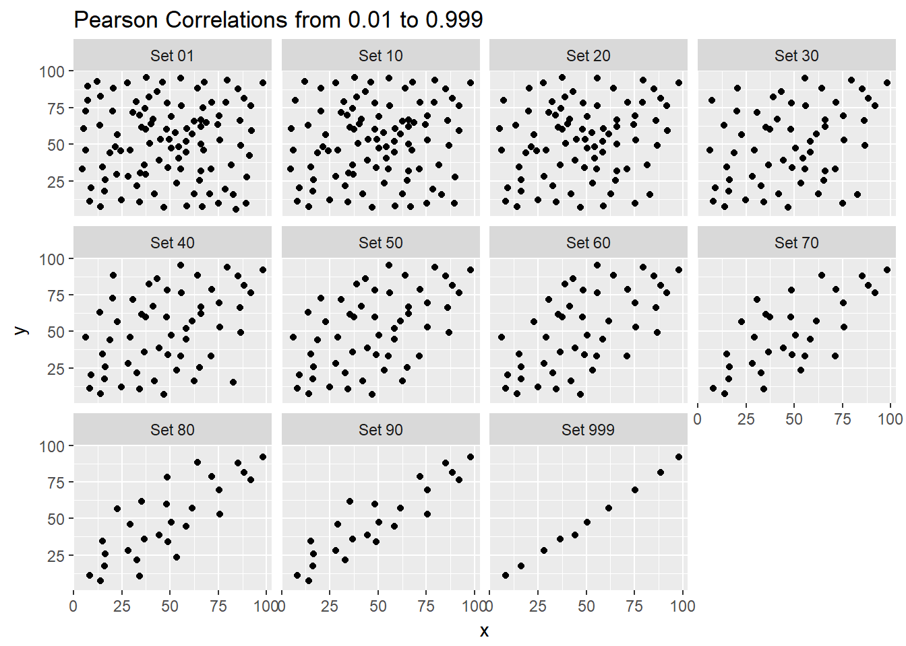
Note that R will allow you to fit a straight line model to any of these relationships, no matter how appropriate it might be to do so.
ggplot(correx2, aes(x = x, y = y)) +
geom_point() +
geom_smooth(method = "lm", col = "red") +
facet_wrap(~ set) +
labs(title = "R will fit a straight line to anything.")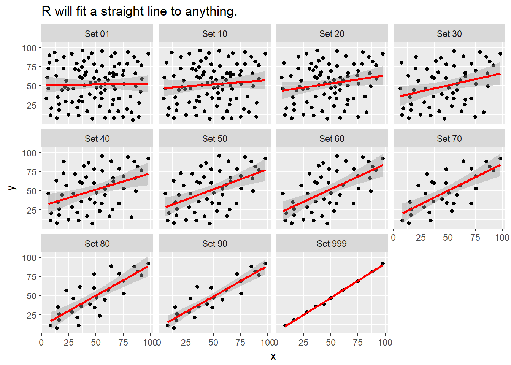
ggplot(correx2, aes(x = x, y = y)) +
geom_point() +
geom_smooth(col = "blue") +
facet_wrap(~ set) +
labs(title = "Even if a loess smooth suggests non-linearity.")`geom_smooth()` using method = 'loess'
ggplot(correx2, aes(x = x, y = y, color = factor(group))) +
geom_point() +
guides(color = "none") +
facet_wrap(~ set) +
labs(title = "Note: The same 10 points (in red) are in each plot.")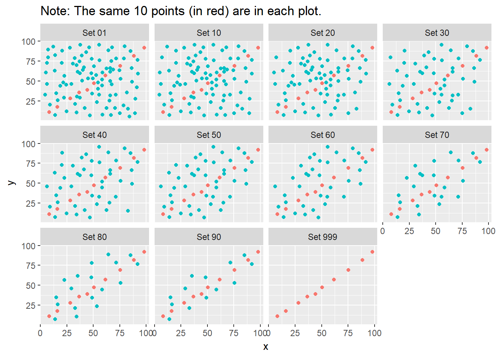
Note that the same 10 points are used in each of the data sets. It’s always possible that a lurking subgroup of the data within a scatterplot follows a very strong linear relationship. This is why it’s so important (and difficult) not to go searching for such a thing without a strong foundation of logic, theory and prior empirical evidence.
11.6 The Spearman Rank Correlation
The Spearman rank correlation coefficient is a rank-based measure of statistical dependence that assesses how well the relationship between X and Y can be described using a monotone function even if that relationship is not linear.
- A monotone function preserves order, that is, Y must either be strictly increasing as X increases, or strictly decreasing as X increases.
- A Spearman correlation of 1.0 indicates simply that as X increases, Y always increases.
- Like the Pearson correlation, the Spearman correlation is dimension-free, and falls between -1 and +1.
- A positive Spearman correlation corresponds to an increasing (but not necessarily linear) association between X and Y, while a negative Spearman correlation corresponds to a decreasing (but again not necessarily linear) association.
11.6.1 Spearman Formula
To calculate the Spearman rank correlation, we take the ranks of the X and Y data, and then apply the usual Pearson correlation. To find the ranks, sort X and Y into ascending order, and then number them from 1 (smallest) to n (largest). In the event of a tie, assign the average rank to the tied subjects.
11.6.2 Comparing Pearson and Spearman Correlations
Let’s look at the nyfs1 data again.
cor(nyfs1$bmi, nyfs1$waist.circ)[1] 0.91cor(nyfs1$bmi, nyfs1$waist.circ, method = "spearman")[1] 0.889nyfs1 %>%
select(bmi, waist.circ) %>%
cor(., method = "spearman") bmi waist.circ
bmi 1.000 0.889
waist.circ 0.889 1.000The Spearman and Pearson correlations are not especially different in this case.
11.6.3 Spearman vs. Pearson Example 1
The next few plots describe relationships where we anticipate the Pearson and Spearman correlations might differ in their conclusions.
spear1 <- read.csv("data/spear1.csv")
spear2 <- read.csv("data/spear2.csv")
spear3 <- read.csv("data/spear3.csv")
spear4 <- read.csv("data/spear4.csv")
# used read.csv above because these are just toy examples with
# two columns per data set and no row numberingExample 1 shows a function where the Pearson correlation is 0.925 (a strong but not perfect linear relation), but the Spearman correlation is signif(cor(spear1$x, spear1$y, method = "spearman"),2) because the relationship is monotone, even though it is not perfectly linear.
ggplot(spear1, aes(x = x, y = y)) +
geom_point() +
labs(title = "Spearman vs. Pearson, Example 1") +
annotate("text", x = -10, y = 20,
label = paste("Pearson r = ",
signif(cor(spear1$x, spear1$y),2),
", Spearman r = ",
signif(cor(spear1$x, spear1$y, method = "spearman"),2)))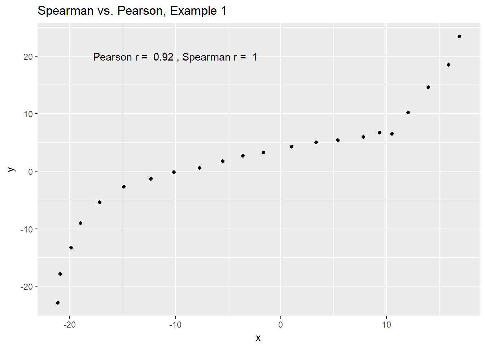
So, a positive Spearman correlation corresponds to an increasing (but not necessarily linear) association between x and y.
11.6.4 Spearman vs. Pearson Example 2
Example 2 shows that a negative Spearman correlation corresponds to a decreasing (but, again, not necessarily linear) association between x and y.
ggplot(spear2, aes(x = x, y = y)) +
geom_point(col = "purple") +
geom_smooth(method = "loess", se = FALSE) +
labs(title = "Spearman vs. Pearson, Example 2") +
annotate("text", x = 10, y = 20, col = "purple",
label = paste("Pearson r = ",
signif(cor(spear2$x, spear2$y),2),
", Spearman r = ",
signif(cor(spear2$x, spear2$y, method = "spearman"),2)))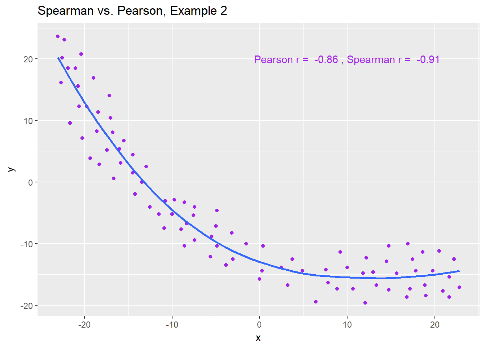
11.6.5 Spearman vs. Pearson Example 3
The Spearman correlation is less sensitive than the Pearson correlation is to strong outliers that are unusual on either the X or Y axis, or both. That is because the Spearman rank coefficient limits the outlier to the value of its rank.
In Example 3, for instance, the Spearman correlation reacts much less to the outliers around X = 12 than does the Pearson correlation.
ggplot(spear3, aes(x = x, y = y)) +
geom_point(col = "blue") +
labs(title = "Spearman vs. Pearson, Example 3") +
annotate("text", x = 5, y = -15, col = "blue",
label = paste("Pearson r = ",
signif(cor(spear3$x, spear3$y),2),
", Spearman r = ",
signif(cor(spear3$x, spear3$y, method = "spearman"),2)))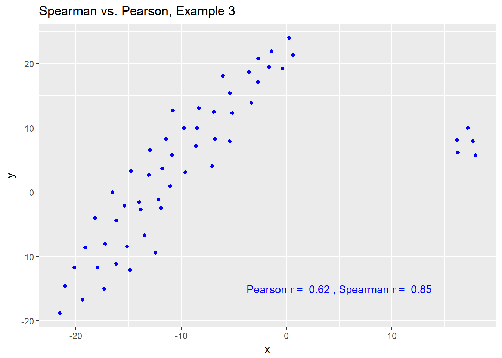
11.6.6 Spearman vs. Pearson Example 4
The use of a Spearman correlation is no substitute for looking at the data. For non-monotone data like what we see in Example 4, neither the Spearman nor the Pearson correlation alone provides much guidance, and just because they are (essentially) telling you the same thing, that doesn’t mean what they’re telling you is all that helpful.
ggplot(spear4, aes(x = x, y = y)) +
geom_point(col = "purple") +
geom_smooth(method = "loess", se = FALSE) +
labs(title = "Spearman vs. Pearson, Example 4") +
annotate("text", x = 10, y = 20, col = "purple",
label = paste("Pearson r = ",
signif(cor(spear4$x, spear4$y),2),
", Spearman r = ",
signif(cor(spear4$x, spear4$y, method = "spearman"),2)))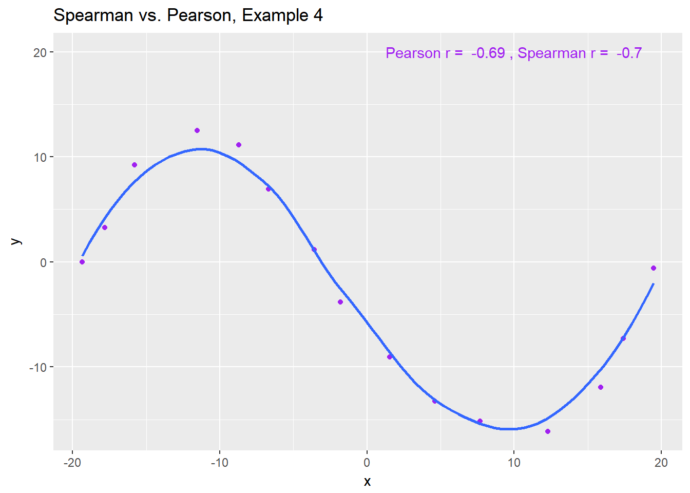